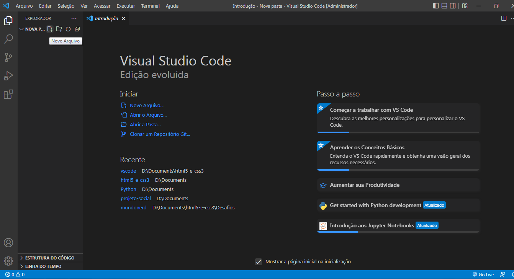
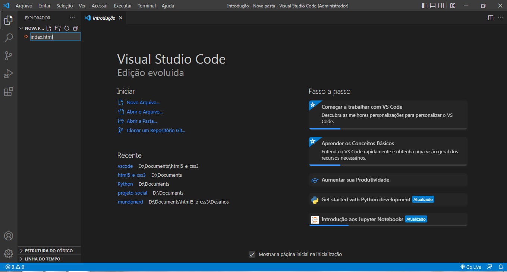
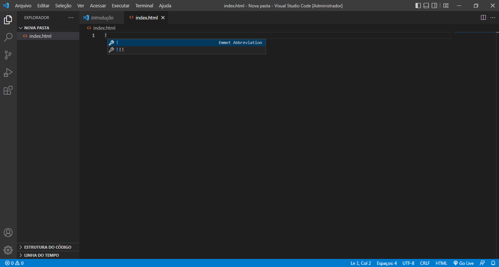
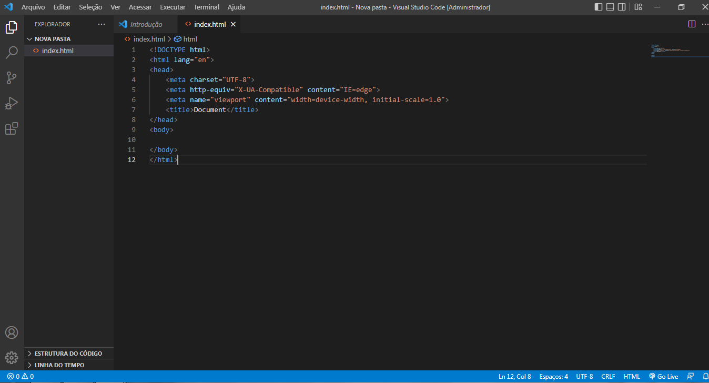

O que é e quando foi feito?
A Microsoft lançou em 2015 um editor de código destinado ao desenvolvimento de aplicações web chamado Visual Studio Code ( VSCode) lançado sob a licença MIT e o seu código-fonte foi postado no GitHub. O suporte para extensões também foi anunciado.
O que fazer no VsCode?
Com o VSCode é possível abrir tanto um único arquivo como uma pasta completa e pode utilizar os arquivos abertos como base para oferecer opções no IntelliSense dinamicamente, como é o caso dos arquivos JSON de configuração dos projetos ASP.NET 5.
Com um layout simplificado e intuitivo, o objetivo é maximizar a área do editor, buscando deixar mais espaço para a navegação e acesso completo ao contexto da pasta ou do projeto. A interface de usuário (UI) é dividida em quatro partes principais:
- Editor: área principal para a edição dos arquivos, onde podemos abrir até três editores lado a lado;
- Side Bar, cujo conteúdo varia de acordo com a ação a ser executada (explorar arquivos, interagir com o Git, etc.);
- Status Bar: indica as informações sobre o projeto aberto e os arquivos que são editados;
- View Bar, onde temos a possibilidade de alternar entre as views do projeto e ainda ter os indicadores de contexto, como o número de alterações realizadas, caso o Git esteja habilitado.
Como criar um index.html
1º Criar Arquivo
Para isso, logo após de ter criado uma pasta nova, você precisa apertar o botão de novo arquivo.
2º Nomer o arquivo com ".html"
Na frente do nome de sua preferência, necessita-se do tipo de arquivo que vai ser feito, indicado depois do ponto.
3º Base do corpo HTML
Porfim, depois tudo o que resta a fazer é digitar o símbolo de exclamação (!) para criar o corpo básico do seu site:
Nesse corpo do html, você pode fazer o seu site, desde o título a um texto explicativo sobre vscode.
